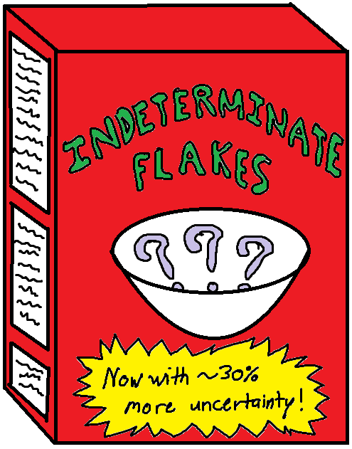

4 is a pseudoprime to base 5Exercise: compute the probability that a monkey at a typewriter types the complete works of Shakespeare (on first attempt)Conditional probability: when you've entered a new sample space, and adjust your estimate of the probability that the end is near

What is the probability that the marshmallow to bland cereal ratio is sufficient?Ecole Normale Superieure: where all grades are normally distributedPractical uses of math: a wizard threatens you to do mathNot a cartoon, but what I think of when pronouncing ln as loge